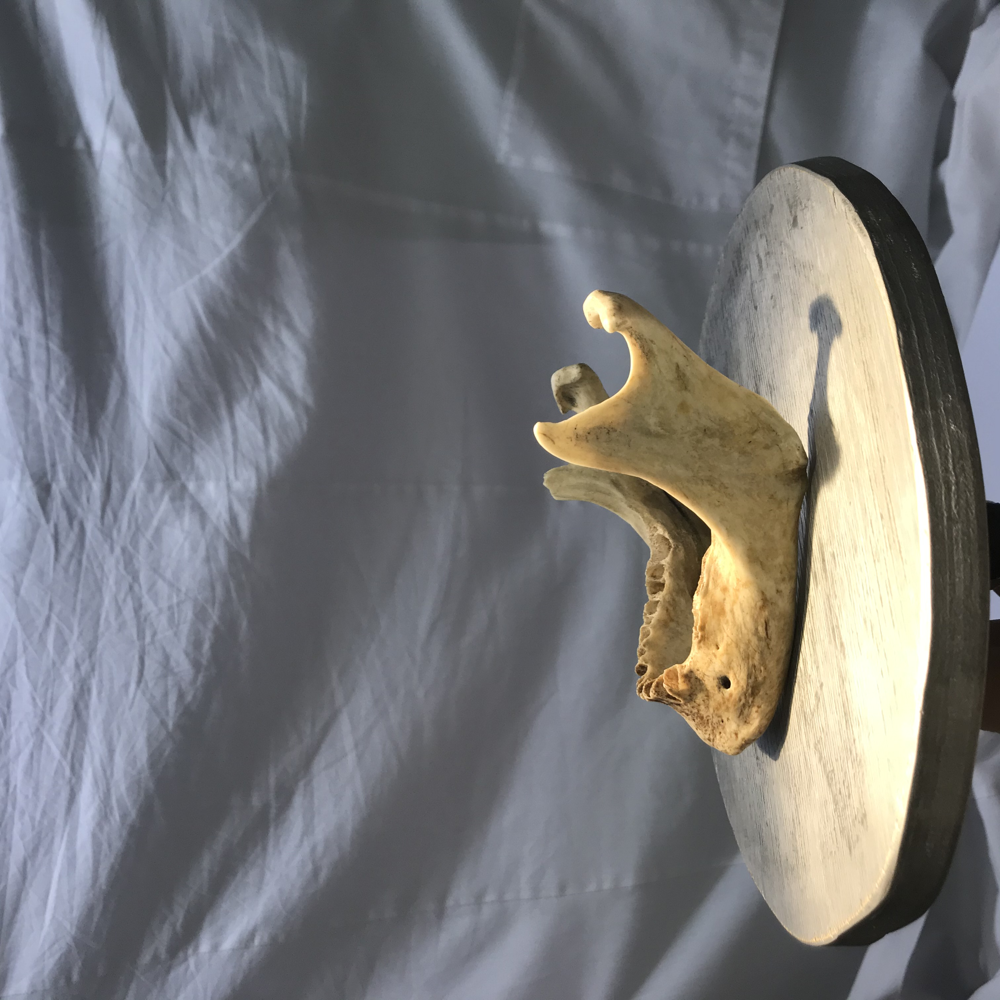
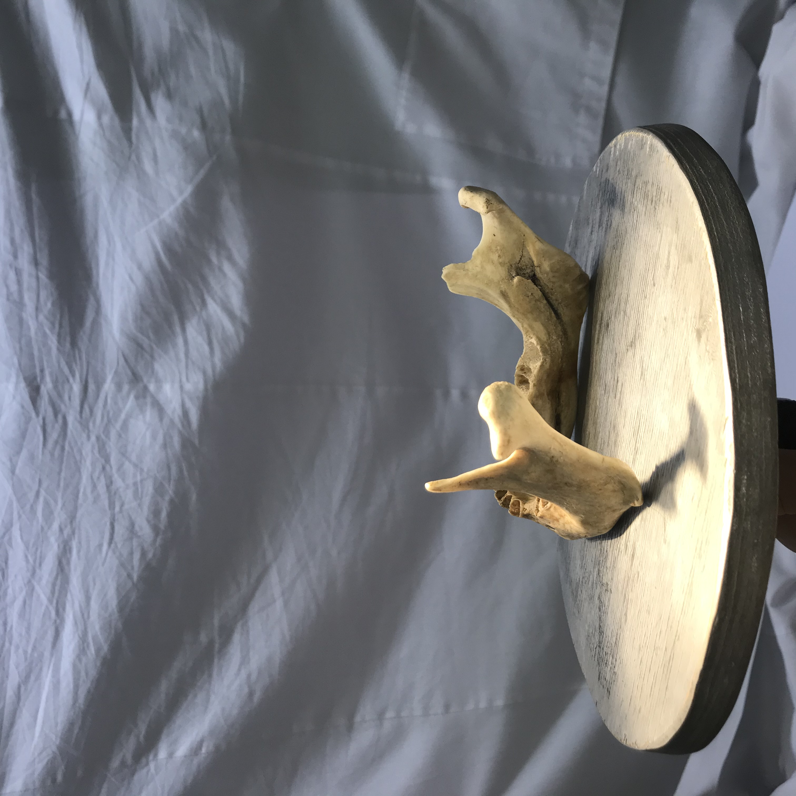
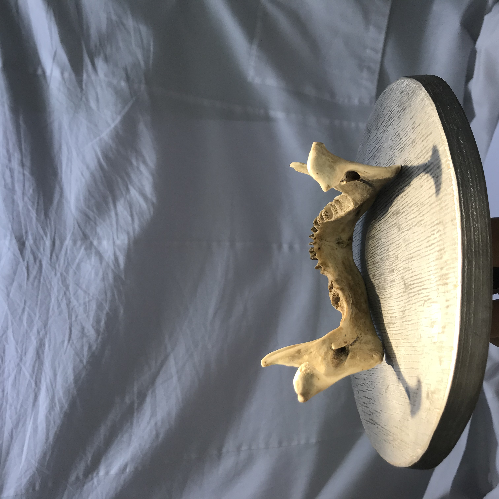
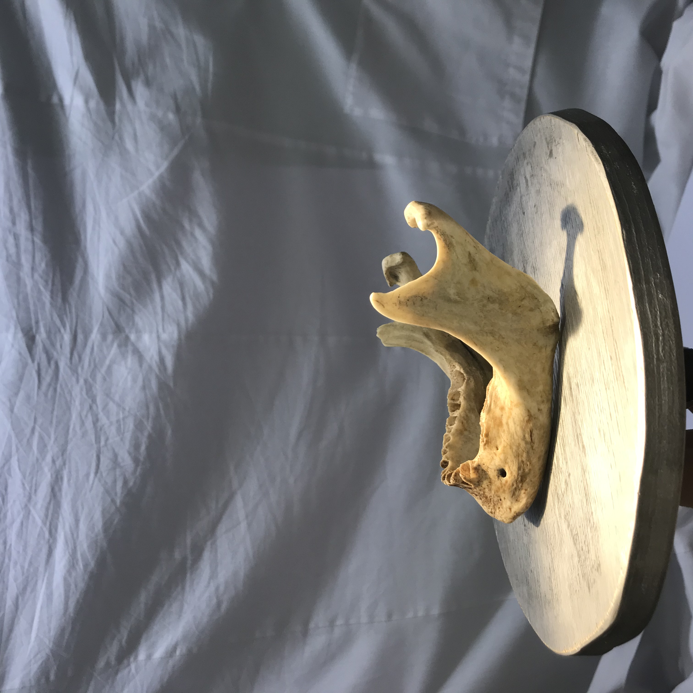
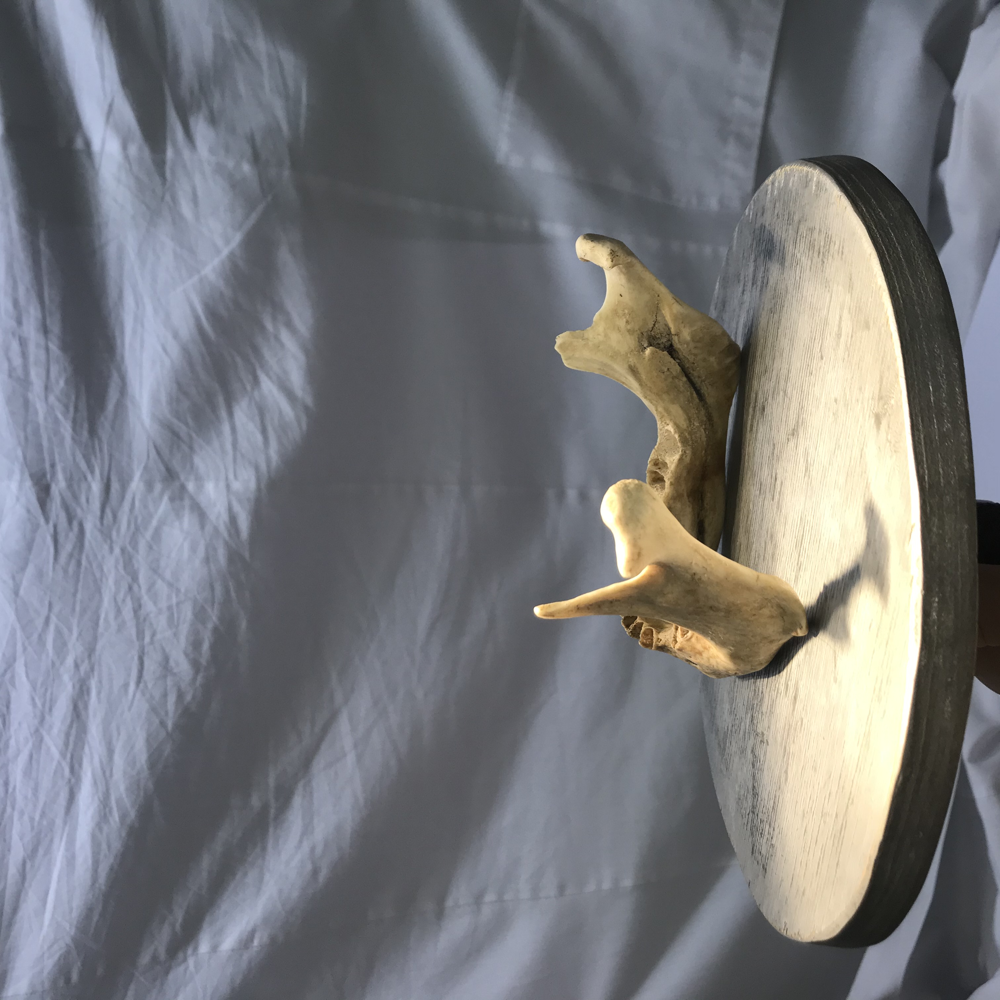
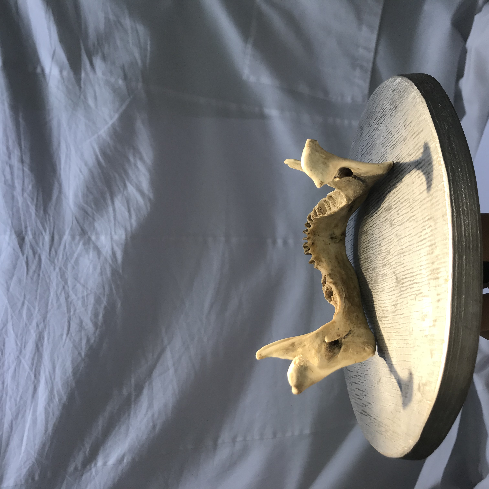

Нижняя челюсть
Нижняя челюсть (лат. mandibula) — непарная костная структура, образующая нижний отдел лицевого черепа. Является единственной подвижной костью в черепе взрослого человека.
Строение нижней челюсти
- альвеолярный отросток — край тела челюсти, где расположены ячейки зубов;
- тело нижней челюсти;
- подбородочное отверстие;
- нижнечелюстной канал;
- угол нижней челюсти;
- ветви нижней челюсти;
- мыщелковые отростки;
- венечные отростки;
- нижнечелюстное отверстие;
- головка нижней челюсти